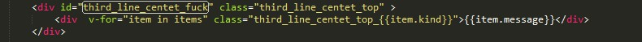
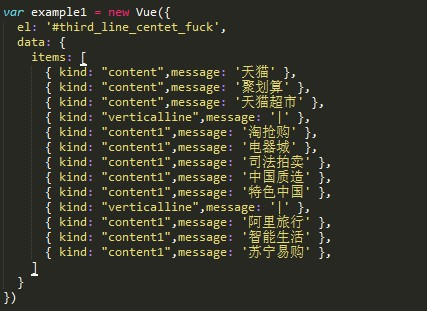

最终效果图
组长：张乐
组员：徐钟鸣、谢佳豪
小组刚开始想要模仿并实现bilibili的弹幕功能，后来因为一些原因改为编写淘宝页面
用Vue.js将html的数据存储在js文件中，大大减少html文件的冗余度
 
如图所示，这是轮播功能的的部分js代码。flag用于防止以鬼畜的速度点击轮播箭头后产生动画混乱的效果。左图ul结构下有七张图片，第一张和第五张图片都有 两张，用以完美实现从第五张图片跳转回第一张图片的功能。
右上角橙色或者绿色的H标签具有动画效果，一次动作包含在0.4s间向上移动5px并返回，如是两次。并设置每3s循环一次
主题市场只做了一个女装|男装|内衣界面。为了实现无论从左边那个标签打开右边的拓展界面并且左边标签的背景色加深效果不变，通过dom对象temp保存左边标签然后将其转化为jquery对象$temp1来继续保持左边标签的opacity和background-color的属性
由于输入框input对placeholder属性设置的不全面，所以重写了输入框提示文字的部分，并用jquery的keyup函数监听键盘动作，如果输入框有内容输入，则隐藏 提示的文字